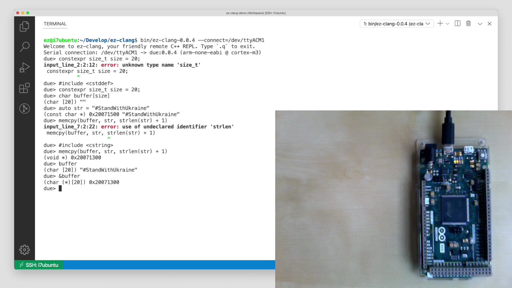

Clang-based cross-compiler with an LLVM remote-JIT backend targeting low-resource embedded devices
Standard C++
Native JIT
4kb Device Firmware
Quick Setup


Subscribe to monthly updates

Contact: Stefan Gränitz
https://weliveindetail.github.io/blog/about/